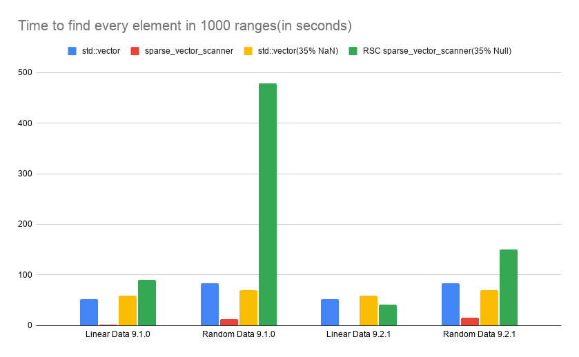

Version 9.2.1
July 31, 2026Release Notes
Improvements
This update improves the speed of sparse_vector_scanner searches, particularly searches involving sparse_vector_float objects, by adding new internal methods.
Reasons for Improvements
- Removed the creation of a new internal unsigned int scanner with every single search, and now the internal scanner is only created once
- Added an internal mask so that when a float search based on a previous search occurs, it does not search the entire sparse vector
- Reduced the amount of times decompression of an internal bvector occurs
Performance Analysis Data
Comparing time to run 1,000 find_range_float searches between 9.1.0 and 9.2.1
Each vector has 20 million elements
std::vector linearly goes over every element in the vector.
| Implementation | Linear Data 9.1.0 | Random Data 9.1.0 | Linear Data 9.2.1 | Random Data 9.2.1 |
|---|---|---|---|---|
std::vector |
52 | 83.34 | 52 | 83.34 |
sparse_vector_scanner |
0.8433 | 12.88 | 0.64 | 14.66 |
std::vector (35% NaN) |
58.46 | 69.18 | 58.46 | 69.18 |
RSC sparse_vector_scanner (35% Null) |
89.5 | 479.28 | 41.59 | 150 |

New Methods
sparse_vector_scanner::find_range_float_unbounded— finds every value in an open interval, unlike the existingfind_range_floatmethod
New Samples
-
xsample11:
Demonstrates uses for
sparse_vector_floatobjects with financial data
Fixes
- Fixed a major bug in
bvector<>::bit_or_and()where the target block was not preserved when AND produces an empty block